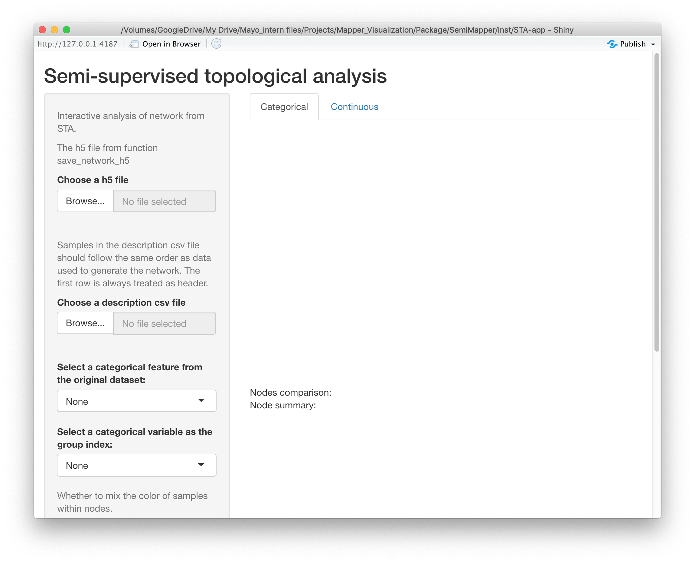
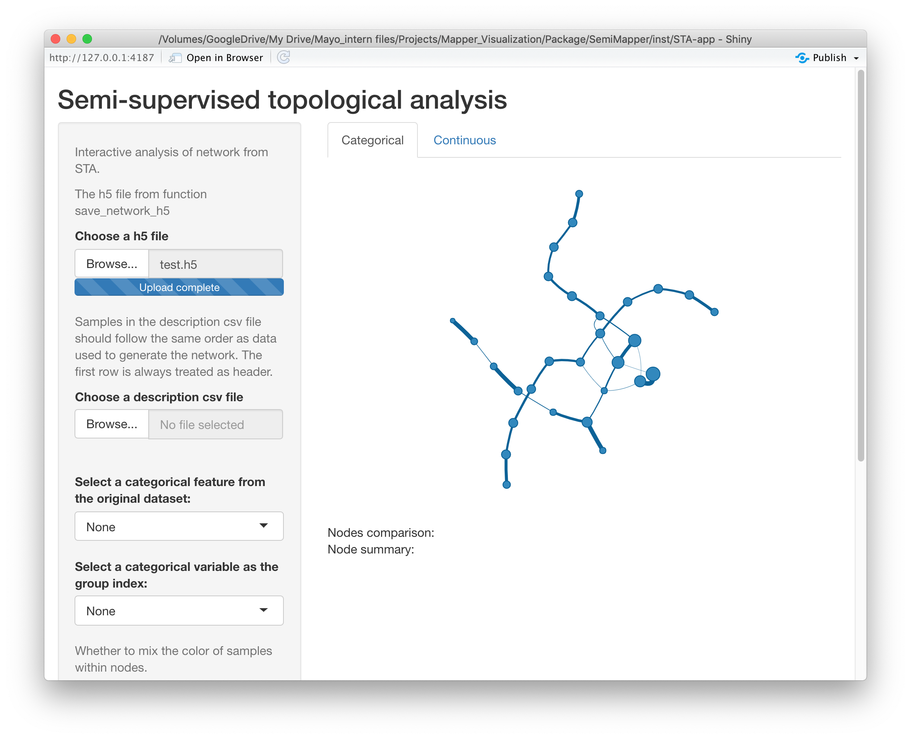
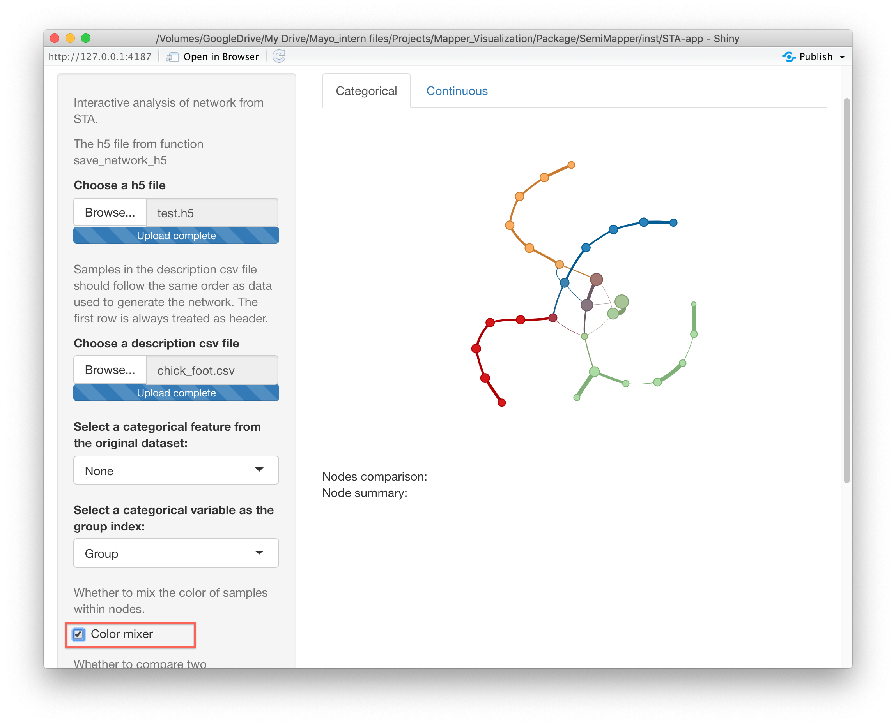
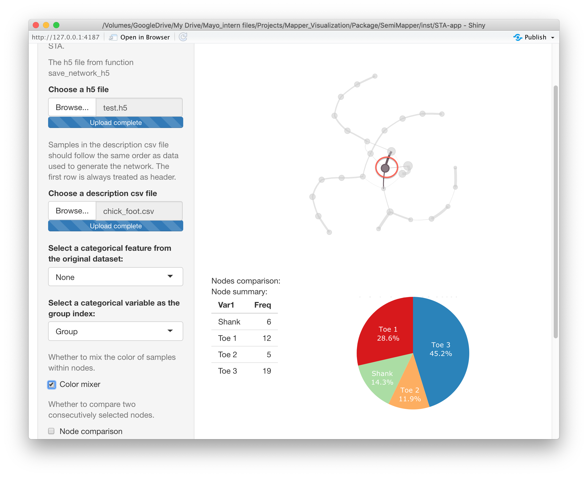
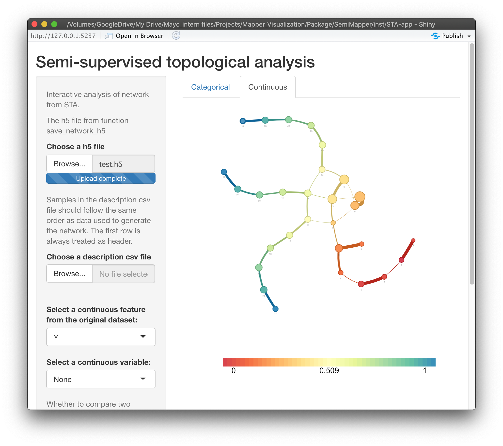
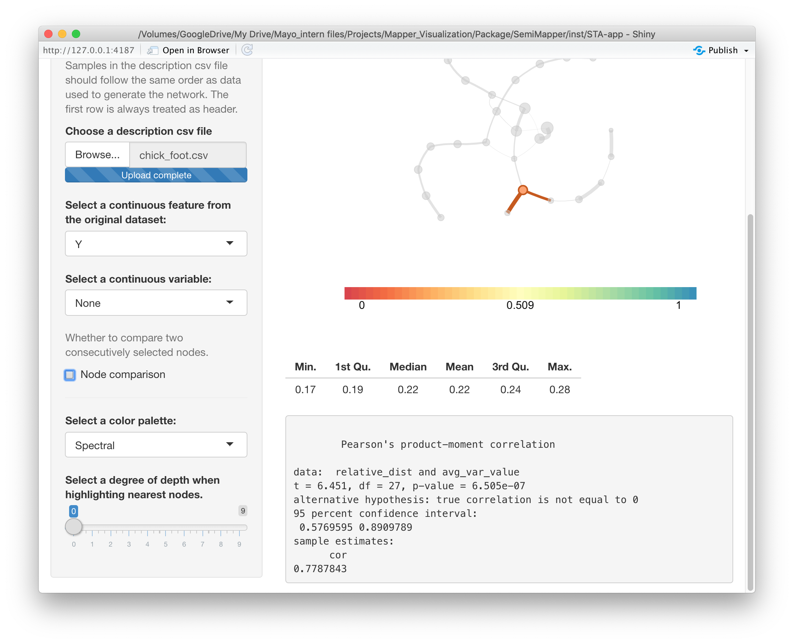

Shiny app instruction
Tianshu Feng
4/20/2020
Source:Shiny_app_instruction.Rmd
Shiny_app_instruction.RmdThis page introduces the Shiny app designed to interactively analysis results from the mapper.kmeans function of package STA.
Interface
This app includes a sidebar for input/output and settings, and a main panel for result display. An overview of the user interface of the shiny app is shown below:
|  |
|---|
| User interface of the shiny app. |
Input
The app accept .h5 file from function save_network_h5. The first argument of the function is for the object TDAMapper from mapper.kmeans; and the second, optional argument allows users to save the dataset used in the analysis. Note that the order of samples in the dataset should be the same as that used in mapper.kmeans, and rows represent the samples. The third argument decides the name and path of the .h5 file and should end with ‘.h5’.
The following example code applies the STA method to the chicken foot data and generate a .h5 file based on the result.
library(STA) simu_data <- chicken_generator(seed = 1) simu_data_mapper <- mapper.kmeans(dat = simu_data[,2:4], filter_values = simu_data$Y, num_intervals = 10, percent_overlap = 70) save_network_h5(obj_mapper = simu_data_mapper, dataset = simu_data, file = "simu.h5")
After loading the .h5 file, the app will automatically generate the network based on the obj_mapper object saved in the .h5 file.
|  |
|---|
| .h5 file input. |
Then, if the dataset is provided in the .h5 file with save_network_h5, users can choose either a categorical or continuous variable under the categorical/continuous tab to color the network.
Furthermore, the app accepts an additional descriptive .csv file containing additional features of the samples. Note that the order of samples in the description csv file should follow the same order as data used to generate the network. The first row of the descriptive file is always treated as header. Character variables in the file will be treated as factors.
Data visualization and analysis
Categorical variable
If we select a categorical variable under the “Categorical” tab, the Shiny app will color the nodes based on the majority of categories within each node. For example, if we choose ‘Group’ in the above example, the network will look like:
 |
|---|
| Categorical data analysis. |
Alternatively, we can mix the colors of samples within each node by selecting the “color mixer” option. It will lead to:
|  |
|---|
| Color mixer. |
Clicking on the nodes in the shiny app will lead to a node summary shown below the network. Currently, for categorical variables, the summary of a node includes a frequency table and a pie chart based on the categories of the samples within the node. For example,
|  |
|---|
| Node summary for categorical variables. |
Continuous variable
Similarly, we can select a continuous variable under the “Continuous” tab, and the Shiny app will color the nodes based on the average values of samples w.r.t. the varible. For example, if we choose ‘Y’-axis in the above example, the app will look like:
|  |
|---|
| Continuous data analysis. |
Clicking on the nodes in the shiny app will lead to a node summary shown below the network. Currently, for continuous variables, the summary of a node includes a violin plot, a table of quantiles and a test for Spearman’s \(\rho\). Here, the correlation is between the average values of the selected continuous variable of the nodes, and the minimum distance to the seleted node from other nodes.
For example,
|  |
|---|
| Node summary for continuous variables. |